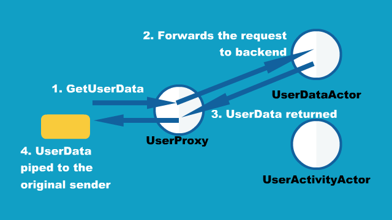
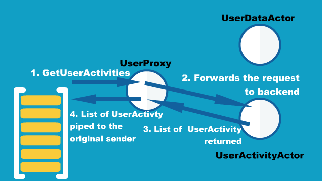

Futures
Dependency
This section explains using plain Scala Futures but focuses on their interop with Akka Actors, so to follow those examples you will want to depend on:
- sbt
libraryDependencies += "com.typesafe.akka" %% "akka-actor" % "2.5-SNAPSHOT"- Maven
<dependency> <groupId>com.typesafe.akka</groupId> <artifactId>akka-actor_2.12</artifactId> <version>2.5-SNAPSHOT</version> </dependency>- Gradle
dependencies { compile group: 'com.typesafe.akka', name: 'akka-actor_2.12', version: '2.5-SNAPSHOT' }
Introduction
In the Scala Standard Library, a Future is a data structure used to retrieve the result of some concurrent operation. This result can be accessed synchronously (blocking) or asynchronously (non-blocking).
To be able to use this from Java, Akka provides a java friendly interface in akka.dispatch.Futures.
See also Java 8 Compatibility for Java compatibility.
Execution Contexts
In order to execute callbacks and operations, Futures need something called an ExecutionContext, which is very similar to a java.util.concurrent.Executor. if you have an ActorSystem in scope, it will use its default dispatcher as the ExecutionContext, or you can use the factory methods provided by the ExecutionContext companion objectExecutionContexts class to wrap Executors and ExecutorServices, or even create your own.
- Scala
-
import scala.concurrent.{ ExecutionContext, Promise } implicit val ec = ExecutionContext.fromExecutorService(yourExecutorServiceGoesHere) // Do stuff with your brand new shiny ExecutionContext val f = Promise.successful("foo") // Then shut your ExecutionContext down at some // appropriate place in your program/application ec.shutdown() - Java
-
import akka.dispatch.*; import jdocs.AbstractJavaTest; import scala.concurrent.ExecutionContext; import scala.concurrent.Future; import scala.concurrent.Await; import scala.concurrent.Promise; import akka.util.Timeout; ExecutionContext ec = ExecutionContexts.fromExecutorService(yourExecutorServiceGoesHere); // Use ec with your Futures Future<String> f1 = Futures.successful("foo"); // Then you shut down the ExecutorService at the end of your application. yourExecutorServiceGoesHere.shutdown();
Within Actors
Each actor is configured to be run on a MessageDispatcher, and that dispatcher doubles as an ExecutionContext. If the nature of the Future calls invoked by the actor matches or is compatible with the activities of that actor (e.g. all CPU bound and no latency requirements), then it may be easiest to reuse the dispatcher for running the Futures by importing context.dispatchergetContext().getDispatcher().
- Scala
-
class A extends Actor { import context.dispatcher val f = Future("hello") def receive = { case _ ⇒ } } - Java
-
import akka.actor.AbstractActor; import akka.dispatch.Futures; public class ActorWithFuture extends AbstractActor { ActorWithFuture() { Futures.future(() -> "hello", getContext().dispatcher()); } @Override public Receive createReceive() { return AbstractActor.emptyBehavior(); } }
Use with Actors
There are generally two ways of getting a reply from an ActorAbstractActor: the first is by a sent message (actor ! msgactorRef.tell(msg, sender)), which only works if the original sender was an ActorAbstractActor) and the second is through a Future.
Using an Actor’s ?the ActorRef’s ask method to send a message will return a Future. To wait for and retrieve the actual result the simplest method is:
- Scala
-
import scala.concurrent.Await import akka.pattern.ask import akka.util.Timeout import scala.concurrent.duration._ implicit val timeout = Timeout(5 seconds) val future = actor ? msg // enabled by the “ask” import val result = Await.result(future, timeout.duration).asInstanceOf[String] - Java
-
import akka.dispatch.*; import jdocs.AbstractJavaTest; import scala.concurrent.ExecutionContext; import scala.concurrent.Future; import scala.concurrent.Await; import scala.concurrent.Promise; import akka.util.Timeout; Timeout timeout = Timeout.create(Duration.ofSeconds(5)); Future<Object> future = Patterns.ask(actor, msg, timeout); String result = (String) Await.result(future, timeout.duration());
This will cause the current thread to block and wait for the ActorAbstractActor to ‘complete’ the Future with its reply. Blocking is discouraged though as it will cause performance problems. The blocking operations are located in Await.result and Await.ready to make it easy to spot where blocking occurs. Alternatives to blocking are discussed further within this documentation. Also note that the Future returned by an ActorAbstractActor is a Future[Any]Future<Object> since an ActorAbstractActor is dynamic. That is why the asInstanceOfcast to String is used in the above sample.
Await.result and Await.ready are provided for exceptional situations where you must block, a good rule of thumb is to only use them if you know why you must block. For all other cases, use asynchronous composition as described below.
When using non-blocking it is better to use the mapTo method to safely try to cast a Future to an expected type:
import scala.concurrent.Future
import akka.pattern.ask
val future: Future[String] = ask(actor, msg).mapTo[String]The mapTo method will return a new Future that contains the result if the cast was successful, or a ClassCastException if not. Handling Exceptions will be discussed further within this documentation.
Use the pipe pattern
Another useful message-transfer pattern is “pipe”, which is to send the result of FutureCompletableFuture to another actor, upon completion of the FutureCompletableFuture. The pipe pattern can be used by importing akka.pattern.Patterns.pipe.akka.pattern.pipe, and define or import an implicit instance of ExecutionContext in the scope.
- Scala
-
class ActorUsingPipeTo(target: ActorRef) extends Actor { // akka.pattern.pipe needs to be imported import akka.pattern.{ ask, pipe } // implicit ExecutionContext should be in scope implicit val ec: ExecutionContext = context.dispatcher implicit val timeout: Timeout = 5.seconds def receive = { case _ ⇒ val future = target ? "some message" future pipeTo sender() // use the pipe pattern } } - Java
-
import static akka.pattern.Patterns.ask; import static akka.pattern.Patterns.pipe; public class ActorUsingPipeTo extends AbstractActor { ActorRef target; Duration timeout; ActorUsingPipeTo(ActorRef target) { this.target = target; this.timeout = Duration.ofSeconds(5); } @Override public Receive createReceive() { return receiveBuilder() .match( String.class, msg -> { CompletableFuture<Object> fut = ask(target, "some message", timeout).toCompletableFuture(); // the pipe pattern pipe(fut, getContext().dispatcher()).to(getSender()); }) .build(); } }
To see how this works in more detail, let’s introduce a small example consisting of three different actors, UserProxyActor, UserDataActor and UserActivityActor. In this example, when you need information about a user, you send a request message to UserProxyActor, then it gets the corresponding result from the appropriate backend actor based on the request message type.


The message types you send to UserProxyActor are GetUserData and GetUserActivities:
- Scala
-
object UserProxyActor { sealed trait Message case object GetUserData extends Message case object GetUserActivities extends Message } - Java
-
public class GetUserData {} public class GetUserActivities {}
and UserData and List[UserActivity]ArrayList<UserActivity> are returned to the original sender in the end.
- Scala
-
case class UserData(data: String) case class UserActivity(activity: String) - Java
-
public class UserData { final String data; UserData(String data) { this.data = data; } } public class UserActivity { final String activity; UserActivity(String activity) { this.activity = activity; } }
The backend UserDataActor and UserActivityActor are defined as follows:
- Scala
-
class UserDataActor extends Actor { import UserDataActor._ //holds the user data internally var internalData: UserData = UserData("initial data") def receive = { case Get ⇒ sender() ! internalData } } object UserDataActor { case object Get } - Java
-
public class UserDataActor extends AbstractActor { UserData internalData; UserDataActor() { this.internalData = new UserData("initial data"); } @Override public Receive createReceive() { return receiveBuilder() .match(GetFromUserDataActor.class, msg -> sender().tell(internalData, self())) .build(); } } public class GetFromUserDataActor {}
UserDataActor holds the data in memory, so that it can return the current state of the user data quickly upon a request.
On the other hand, UserActivityActor queries into a repository to retrieve historical user activities then sends the result to the sender() which is UserProxy in this case, with the pipe pattern.
- Scala
-
trait UserActivityRepository { def queryHistoricalActivities(userId: String): Future[List[UserActivity]] } class UserActivityActor(val userId: String, repository: UserActivityRepository) extends Actor { import akka.pattern.pipe import UserActivityActor._ implicit val ec: ExecutionContext = context.dispatcher def receive = { case Get ⇒ // user's historical activities are retrieved // via the separate repository repository.queryHistoricalActivities(userId) pipeTo sender() } } object UserActivityActor { case object Get } - Java
-
import static akka.pattern.Patterns.pipe; interface UserActivityRepository { CompletableFuture<ArrayList<UserActivity>> queryHistoricalActivities(String userId); } public class UserActivityActor extends AbstractActor { String userId; UserActivityRepository repository; UserActivityActor(String userId, UserActivityRepository repository) { this.userId = userId; this.repository = repository; } @Override public Receive createReceive() { return receiveBuilder() .match( GetFromUserActivityActor.class, msg -> { CompletableFuture<ArrayList<UserActivity>> fut = repository.queryHistoricalActivities(userId); pipe(fut, getContext().dispatcher()).to(sender()); }) .build(); } } public class GetFromUserActivityActor {}
Since it needs to talk to the separate repository, it takes time to retrieve the list of UserActivity, hence the return type of queryHistoricalActivities is FutureCompletableFuture. To send back the result to the sender() we used the pipeTopipe method, so that the result of the FutureCompletableFuture is sent to sender() upon FutureCompletableFuture’s completion.
Finally, the definition of UserProxyActor is as below.
- Scala
-
class UserProxyActor( userData: ActorRef, userActivities: ActorRef ) extends Actor { import UserProxyActor._ import akka.pattern.{ ask, pipe } implicit val ec: ExecutionContext = context.dispatcher implicit val timeout = Timeout(5 seconds) def receive = { case GetUserData ⇒ (userData ? UserDataActor.Get) pipeTo sender() case GetUserActivities ⇒ (userActivities ? UserActivityActor.Get) pipeTo sender() } } - Java
-
import static akka.pattern.Patterns.ask; import static akka.pattern.Patterns.pipe; public class UserProxyActor extends AbstractActor { ActorRef userActor; ActorRef userActivityActor; Duration timeout = Duration.ofSeconds(5); UserProxyActor(ActorRef userActor, ActorRef userActivityActor) { this.userActor = userActor; this.userActivityActor = userActivityActor; } @Override public Receive createReceive() { return receiveBuilder() .match( GetUserData.class, msg -> { CompletableFuture<Object> fut = ask(userActor, new GetUserData(), timeout).toCompletableFuture(); pipe(fut, getContext().dispatcher()); }) .match( GetUserActivities.class, msg -> { CompletableFuture<Object> fut = ask(userActivityActor, new GetFromUserActivityActor(), timeout) .toCompletableFuture(); pipe(fut, getContext().dispatcher()).to(sender()); }) .build(); } }
Note that the pipeTopipe method used with the ?ask method. Using pipeTopipe with the ?ask method is a common practice when you want to relay a message from one actor to another.
Use Directly
A common use case within Akka is to have some computation performed concurrently without needing the extra utility of an ActorAbstractActor. If you find yourself creating a pool of ActorsAbstractActors for the sole reason of performing a calculation in parallel, there is an easier (and faster) way:
- Scala
-
import scala.concurrent.Await import scala.concurrent.Future import scala.concurrent.duration._ val future = Future { "Hello" + "World" } future foreach println - Java
-
import java.time.Duration; import java.util.concurrent.*; import scala.util.Try; import akka.japi.Function; import static akka.dispatch.Futures.future; import static java.util.concurrent.TimeUnit.SECONDS; Future<String> f = future( new Callable<String>() { public String call() { return "Hello" + "World"; } }, system.dispatcher()); f.onComplete(new PrintResult<Try<String>>(), system.dispatcher());
In the above code the block passed to Future will be executed by the default Dispatcher, with the return value of the block used to complete the Future (in this case, the result would be the string: “HelloWorld”). Unlike a Future that is returned from an ActorAbstractActor, this Future is properly typed, and we also avoid the overhead of managing an ActorAbstractActor.
You can also create already completed Futures using the Future companionFutures class, which can be either successes:
- Scala
-
val future = Future.successful("Yay!") - Java
-
Future<String> future = Futures.successful("Yay!");
Or failures:
- Scala
-
val otherFuture = Future.failed[String](new IllegalArgumentException("Bang!")) - Java
-
Future<String> otherFuture = Futures.failed(new IllegalArgumentException("Bang!"));
It is also possible to create an empty Promise, to be filled later, and obtain the corresponding Future:
- Scala
-
val promise = Promise[String]() val theFuture = promise.future promise.success("hello") - Java
-
Promise<String> promise = Futures.promise(); Future<String> theFuture = promise.future(); promise.success("hello");
For these examples PrintResult is defined as follows:
public static final class PrintResult<T> extends OnSuccess<T> {
@Override
public final void onSuccess(T t) {
System.out.println(t);
}
}Functional Futures
Scala’s Future has several monadic methods that are very similar to the ones used by Scala’s collections. These allow you to create ‘pipelines’ or ‘streams’ that the result will travel through.
The first method for working with Future functionally is map. This method takes a FunctionMapper which performs some operation on the result of the Future, and returning a new result. The return value of the map method is another Future that will contain the new result:
- Scala
-
val f1 = Future { "Hello" + "World" } val f2 = f1 map { x ⇒ x.length } f2 foreach println - Java
-
import java.time.Duration; import java.util.concurrent.*; import scala.util.Try; import akka.japi.Function; import static akka.dispatch.Futures.future; import static java.util.concurrent.TimeUnit.SECONDS; final ExecutionContext ec = system.dispatcher(); Future<String> f1 = future( new Callable<String>() { public String call() { return "Hello" + "World"; } }, ec); Future<Integer> f2 = f1.map( new Mapper<String, Integer>() { public Integer apply(String s) { return s.length(); } }, ec); f2.onComplete(new PrintResult<Try<Integer>>(), system.dispatcher());
In this example we are joining two strings together within a Future. Instead of waiting for thisf1 to complete, we apply our function that calculates the length of the string using the map method. Now we have a second Future, f2, that will eventually contain an IntInteger. When our original Future, f1, completes, it will also apply our function and complete the second Future with its result. When we finally get the result, it will contain the number 10. Our original Future still contains the string “HelloWorld” and is unaffected by the map.
Something to note when using these methods: passed work is always dispatched on the provided ExecutionContext. Even if the Future has already been completed, when one of these methods is called.
The map method is fine if we are modifying a single Future, but if 2 or more Futures are involved map will not allow you to combine them together:
val f1 = Future {
"Hello" + "World"
}
val f2 = Future.successful(3)
val f3 = f1 map { x ⇒
f2 map { y ⇒
x.length * y
}
}
f3 foreach printlnf3 is a Future[Future[Int]] instead of the desired Future[Int]. Instead, the flatMap method should be used:
val f1 = Future {
"Hello" + "World"
}
val f2 = Future.successful(3)
val f3 = f1 flatMap { x ⇒
f2 map { y ⇒
x.length * y
}
}
f3 foreach printlnComposing futures using nested combinators it can sometimes become quite complicated and hard to read, in these cases using Scala’s ‘for comprehensions’ usually yields more readable code. See next section for examples.
If you need to do conditional propagation, you can use filter:
val future1 = Future.successful(4)
val future2 = future1.filter(_ % 2 == 0)
future2 foreach println
val failedFilter = future1.filter(_ % 2 == 1).recover {
// When filter fails, it will have a java.util.NoSuchElementException
case m: NoSuchElementException ⇒ 0
}
failedFilter foreach printlnFor Comprehensions
Since Future has a map, filter and flatMap method it can be used in a ‘for comprehension’:
val f = for {
a ← Future(10 / 2) // 10 / 2 = 5
b ← Future(a + 1) // 5 + 1 = 6
c ← Future(a - 1) // 5 - 1 = 4
if c > 3 // Future.filter
} yield b * c // 6 * 4 = 24
// Note that the execution of futures a, b, and c
// are not done in parallel.
f foreach printlnSomething to keep in mind when doing this is even though it looks like parts of the above example can run in parallel, each step of the for comprehension is run sequentially. This will happen on separate threads for each step but there isn’t much benefit over running the calculations all within a single Future. The real benefit comes when the Futures are created first, and then combining them together.
Composing Futures
The example for comprehension above is an example of composing Futures. A common use case for this is combining the replies of several Actors into a single calculation without resorting to calling Await.result or Await.ready to block for each result. First an example of using Await.result:
val f1 = ask(actor1, msg1)
val f2 = ask(actor2, msg2)
val a = Await.result(f1, 3 seconds).asInstanceOf[Int]
val b = Await.result(f2, 3 seconds).asInstanceOf[Int]
val f3 = ask(actor3, (a + b))
val result = Await.result(f3, 3 seconds).asInstanceOf[Int]Here we wait for the results from the first 2 Actors before sending that result to the third Actor. We called Await.result 3 times, which caused our little program to block 3 times before getting our final result. Now compare that to this example:
val f1 = ask(actor1, msg1)
val f2 = ask(actor2, msg2)
val f3 = for {
a ← f1.mapTo[Int]
b ← f2.mapTo[Int]
c ← ask(actor3, (a + b)).mapTo[Int]
} yield c
f3 foreach printlnHere we have 2 actors processing a single message each. Once the 2 results are available (note that we don’t block to get these results!), they are being added together and sent to a third Actor, which replies with a string, which we assign to ‘result’.
This is fine when dealing with a known amount of Actors, but can grow unwieldy if we have more than a handful. The sequence and traverse helper methods can make it easier to handle more complex use cases. Both of these methods are ways of turning, for a subclass T of Traversable, T[Future[A]] into a Future[T[A]]. For example:
It is very often desirable to be able to combine different Futures with each other, below are some examples on how that can be done in a non-blocking fashion.
- Scala
-
// oddActor returns odd numbers sequentially from 1 as a List[Future[Int]] val listOfFutures = List.fill(100)(akka.pattern.ask(oddActor, GetNext).mapTo[Int]) // now we have a Future[List[Int]] val futureList = Future.sequence(listOfFutures) // Find the sum of the odd numbers val oddSum = futureList.map(_.sum) oddSum foreach println - Java
-
import static akka.dispatch.Futures.sequence; final ExecutionContext ec = system.dispatcher(); // Some source generating a sequence of Future<Integer>:s Iterable<Future<Integer>> listOfFutureInts = source; // now we have a Future[Iterable[Integer]] Future<Iterable<Integer>> futureListOfInts = sequence(listOfFutureInts, ec); // Find the sum of the odd numbers Future<Long> futureSum = futureListOfInts.map( new Mapper<Iterable<Integer>, Long>() { public Long apply(Iterable<Integer> ints) { long sum = 0; for (Integer i : ints) sum += i; return sum; } }, ec); futureSum.onComplete(new PrintResult<Try<Long>>(), system.dispatcher());
To better explain what happened in the example, Future.sequence is taking the List[Future[Int]]Iterable<Future<Integer>> and turning it into a Future[List[Int]]Future<Iterable<Integer>>. We can then use map to work with the List[Int]Iterable<Integer> directly, and we aggregate the sum of the ListIterable.
The traverse method is similar to sequence, but it takes a sequence of A and applies a function A => Future[B]from A to Future<B> to return a Future[T[B]] where T is again a subclass of Traversable. For example, to use traverse to sum the first 100 odd numbers: and returns a Future<Iterable<B>>, enabling parallel map over the sequence, if you use Futures.future to create the Future.
- Scala
-
val futureList = Future.traverse((1 to 100).toList)(x ⇒ Future(x * 2 - 1)) val oddSum = futureList.map(_.sum) oddSum foreach println - Java
-
import static akka.dispatch.Futures.traverse; final ExecutionContext ec = system.dispatcher(); // Just a sequence of Strings Iterable<String> listStrings = Arrays.asList("a", "b", "c"); Future<Iterable<String>> futureResult = traverse( listStrings, new Function<String, Future<String>>() { public Future<String> apply(final String r) { return future( new Callable<String>() { public String call() { return r.toUpperCase(); } }, ec); } }, ec); // Returns the sequence of strings as upper case futureResult.onComplete(new PrintResult<Try<Iterable<String>>>(), system.dispatcher());
This is the same result as this example:
val futureList = Future.sequence((1 to 100).toList.map(x ⇒ Future(x * 2 - 1)))
val oddSum = futureList.map(_.sum)
oddSum foreach printlnBut it may be faster to use traverse as it doesn’t have to create an intermediate List[Future[Int]].
Then there’s a method that’s called fold that takes a start-value, a sequence of Futures and a function from the type of the start-value, a timeout, and the type of the futures and returns something with the same type as the start-value, and then applies the function to all elements in the sequence of futures, non-blockingly, the execution will be started when the last of the Futures is completed.
- Scala
-
// Create a sequence of Futures val futures = for (i ← 1 to 1000) yield Future(i * 2) val futureSum = Future.fold(futures)(0)(_ + _) futureSum foreach println - Java
-
import akka.japi.Function2; import static akka.dispatch.Futures.fold; final ExecutionContext ec = system.dispatcher(); // A sequence of Futures, in this case Strings Iterable<Future<String>> futures = source; // Start value is the empty string Future<String> resultFuture = fold( "", futures, new Function2<String, String, String>() { public String apply(String r, String t) { return r + t; // Just concatenate } }, ec); resultFuture.onComplete(new PrintResult<Try<String>>(), system.dispatcher());
That’s all it takes!
If the sequence passed to fold is empty, it will return the start-value, in the case above, that will be 0. In some cases you don’t have a start-value and you’re able to use the value of the first completing Future in the sequence as the start-value, you can use reduce, it works like this:
- Scala
-
// Create a sequence of Futures val futures = for (i ← 1 to 1000) yield Future(i * 2) val futureSum = Future.reduce(futures)(_ + _) futureSum foreach println - Java
-
import static akka.dispatch.Futures.reduce; final ExecutionContext ec = system.dispatcher(); // A sequence of Futures, in this case Strings Iterable<Future<String>> futures = source; Future<Object> resultFuture = reduce( futures, new Function2<Object, String, Object>() { public Object apply(Object r, String t) { return r + t; // Just concatenate } }, ec); resultFuture.onComplete(new PrintResult<Try<Object>>(), system.dispatcher());
Same as with fold, the execution will be done asynchronously when the last of the Future is completed, you can also parallelize it by chunking your futures into sub-sequences and reduce them, and then reduce the reduced results again.
Callbacks
Sometimes you just want to listen to a Future being completed, and react to that not by creating a new Future, but by side-effecting. For this, Future supports onComplete:
- Scala
-
future onComplete { case Success(result) ⇒ doSomethingOnSuccess(result) case Failure(failure) ⇒ doSomethingOnFailure(failure) } - Java
-
final ExecutionContext ec = system.dispatcher(); future.onComplete( new OnComplete<String>() { public void onComplete(Throwable failure, String result) { if (failure != null) { // We got a failure, handle it here } else { // We got a result, do something with it } } }, ec);
Define Ordering
Since callbacks are executed in any order and potentially in parallel, it can be tricky at the times when you need sequential ordering of operations. But there’s a solution and its name is andThen. It creates a new Future with the specified callback, a Future that will have the same result as the Future it’s called on, which allows for ordering like in the following sample:
- Scala
-
val result = Future { loadPage(url) } andThen { case Failure(exception) ⇒ log(exception) } andThen { case _ ⇒ watchSomeTV() } result foreach println - Java
-
final ExecutionContext ec = system.dispatcher(); Future<String> future1 = Futures.successful("value") .andThen( new OnComplete<String>() { public void onComplete(Throwable failure, String result) { if (failure != null) sendToIssueTracker(failure); } }, ec) .andThen( new OnComplete<String>() { public void onComplete(Throwable failure, String result) { if (result != null) sendToTheInternetz(result); } }, ec);
Auxiliary Methods
Future fallbackTo combines 2 Futures into a new Future, and will hold the successful value of the second Future if the first Future fails.
- Scala
-
val future4 = future1 fallbackTo future2 fallbackTo future3 future4 foreach println - Java
-
Future<String> future1 = Futures.failed(new IllegalStateException("OHNOES1")); Future<String> future2 = Futures.failed(new IllegalStateException("OHNOES2")); Future<String> future3 = Futures.successful("bar"); // Will have "bar" in this case Future<String> future4 = future1.fallbackTo(future2).fallbackTo(future3); future4.onComplete(new PrintResult<Try<String>>(), system.dispatcher());
You can also combine two Futures into a new Future that will hold a tuple of the two Futures successful results, using the zip operation.
- Scala
-
val future3 = future1 zip future2 map { case (a, b) ⇒ a + " " + b } future3 foreach println - Java
-
final ExecutionContext ec = system.dispatcher(); Future<String> future1 = Futures.successful("foo"); Future<String> future2 = Futures.successful("bar"); Future<String> future3 = future1 .zip(future2) .map( new Mapper<scala.Tuple2<String, String>, String>() { public String apply(scala.Tuple2<String, String> zipped) { return zipped._1() + " " + zipped._2(); } }, ec); future3.onComplete(new PrintResult<Try<String>>(), system.dispatcher());
Exceptions
Since the result of a Future is created concurrently to the rest of the program, exceptions must be handled differently. It doesn’t matter if an ActorAbstractActor or the dispatcher is completing the Future, if an Exception is caught the Future will contain it instead of a valid result. If a Future does contain an Exception, calling Await.result will cause it to be thrown again so it can be handled properly.
It is also possible to handle an Exception by returning a different result. This is done with the recover method. For example:
- Scala
-
val future = akka.pattern.ask(actor, msg1) recover { case e: ArithmeticException ⇒ 0 } future foreach println - Java
-
final ExecutionContext ec = system.dispatcher(); Future<Integer> future = future( new Callable<Integer>() { public Integer call() { return 1 / 0; } }, ec) .recover( new Recover<Integer>() { public Integer recover(Throwable problem) throws Throwable { if (problem instanceof ArithmeticException) return 0; else throw problem; } }, ec); future.onComplete(new PrintResult<Try<Integer>>(), system.dispatcher());
In this example, if the actor replied with a akka.actor.Status.Failure containing the ArithmeticException, our Future would have a result of 0. The recover method works very similarly to the standard try/catch blocks, so multiple Exceptions can be handled in this manner, and if an Exception is not handled this way it will behave as if we hadn’t used the recover method.
You can also use the recoverWith method, which has the same relationship to recover as flatMap has to map, and is use like this:
- Scala
-
val future = akka.pattern.ask(actor, msg1) recoverWith { case e: ArithmeticException ⇒ Future.successful(0) case foo: IllegalArgumentException ⇒ Future.failed[Int](new IllegalStateException("All br0ken!")) } future foreach println - Java
-
final ExecutionContext ec = system.dispatcher(); Future<Integer> future = future( new Callable<Integer>() { public Integer call() { return 1 / 0; } }, ec) .recoverWith( new Recover<Future<Integer>>() { public Future<Integer> recover(Throwable problem) throws Throwable { if (problem instanceof ArithmeticException) { return future( new Callable<Integer>() { public Integer call() { return 0; } }, ec); } else throw problem; } }, ec); future.onComplete(new PrintResult<Try<Integer>>(), system.dispatcher());
After
akka.pattern.after makes it easy to complete a Future with a value or exception after a timeout.
- Scala
-
// import akka.pattern.after val delayed = akka.pattern.after(200 millis, using = system.scheduler)(Future.failed( new IllegalStateException("OHNOES"))) val future = Future { Thread.sleep(1000); "foo" } val result = Future firstCompletedOf Seq(future, delayed) - Java
-
import static akka.pattern.Patterns.after; import java.util.Arrays; final ExecutionContext ec = system.dispatcher(); Future<String> failExc = Futures.failed(new IllegalStateException("OHNOES1")); Timeout delay = Timeout.create(Duration.ofMillis(200)); Future<String> delayed = Patterns.after(delay.duration(), system.scheduler(), ec, failExc); Future<String> future = future( new Callable<String>() { public String call() throws InterruptedException { Thread.sleep(1000); return "foo"; } }, ec); Future<String> result = Futures.firstCompletedOf(Arrays.<Future<String>>asList(future, delayed), ec);
Retry
akka.pattern.retryakka.pattern.Patterns.retry will retry a Future classCompletionStage class some number of times with a delay between each attempt.
- Scala
-
implicit val scheduler = system.scheduler //Given some future that will succeed eventually @volatile var failCount = 0 def attempt() = { if (failCount < 5) { failCount += 1 Future.failed(new IllegalStateException(failCount.toString)) } else Future.successful(5) } //Return a new future that will retry up to 10 times val retried = akka.pattern.retry( () ⇒ attempt(), 10, 100 milliseconds) - Java
-
import static akka.pattern.Patterns.retry; final ExecutionContext ec = system.dispatcher(); Callable<CompletionStage<String>> attempt = () -> CompletableFuture.completedFuture("test"); CompletionStage<String> retriedFuture = retry(attempt, 3, java.time.Duration.ofMillis(200), system.scheduler(), ec);
Java 8, CompletionStage and CompletableFuture
Starting with Akka 2.4.2 we have begun to introduce Java 8 java.util.concurrent.CompletionStage in Java APIs. It’s a scala.concurrent.Future counterpart in Java; conversion from scala.concurrent.Future is done using scala-java8-compat library.
Unlike scala.concurrent.Future which has async methods only, CompletionStage has async and non-async methods.
The scala-java8-compat library returns its own implementation of CompletionStage which delegates all non-async methods to their async counterparts. The implementation extends standard Java CompletableFuture. Java 8 CompletableFuture creates a new instance of CompletableFuture for any new stage, which means scala-java8-compat implementation is not used after the first mapping method.
After adding any additional computation stage to CompletionStage returned by scala-java8-compat (e.g. CompletionStage instances returned by Akka) it falls back to standard behavior of Java CompletableFuture.
Actions supplied for dependent completions of non-async methods may be performed by the thread that completes the current CompletableFuture, or by any other caller of a completion method.
All async methods without an explicit Executor are performed using the ForkJoinPool.commonPool() executor.
Non-async methods
When non-async methods are applied on a not yet completed CompletionStage, they are completed by the thread which completes initial CompletionStage:
final ExecutionContext ec = system.dispatcher();
final CountDownLatch countDownLatch = new CountDownLatch(1);
Future<String> scalaFuture =
Futures.future(
() -> {
assertThat(
Thread.currentThread().getName(),
containsString("akka.actor.default-dispatcher"));
countDownLatch.await(); // do not complete yet
return "hello";
},
ec);
CompletionStage<String> fromScalaFuture =
FutureConverters.toJava(scalaFuture)
.thenApply(
s -> { // 1
assertThat(
Thread.currentThread().getName(), containsString("ForkJoinPool.commonPool"));
return s;
})
.thenApply(
s -> { // 2
assertThat(
Thread.currentThread().getName(), containsString("ForkJoinPool.commonPool"));
return s;
})
.thenApply(
s -> { // 3
assertThat(
Thread.currentThread().getName(), containsString("ForkJoinPool.commonPool"));
return s;
});
countDownLatch.countDown(); // complete scalaFutureIn this example Scala Future is converted to CompletionStage just like Akka does. The completion is delayed: we are calling thenApply multiple times on a not yet complete CompletionStage, then complete the Future.
First thenApply is actually performed on scala-java8-compat instance and computational stage (lambda) execution is delegated to default Java thenApplyAsync which is executed on ForkJoinPool.commonPool().
Second and third thenApply methods are executed on Java 8 CompletableFuture instance which executes computational stages on the thread which completed the first stage. It is never executed on a thread of Scala Future because default thenApply breaks the chain and executes on ForkJoinPool.commonPool().
In the next example thenApply methods are executed on an already completed Future/CompletionStage:
Future<String> scalaFuture =
Futures.future(
() -> {
assertThat(
Thread.currentThread().getName(),
containsString("akka.actor.default-dispatcher"));
return "hello";
},
ec);
CompletionStage<String> completedStage =
FutureConverters.toJava(scalaFuture)
.thenApply(
s -> { // 1
assertThat(
Thread.currentThread().getName(), containsString("ForkJoinPool.commonPool"));
return s;
});
completedStage.toCompletableFuture().get(2, SECONDS); // complete current CompletionStage
final String currentThread = Thread.currentThread().getName();
CompletionStage<String> stage2 =
completedStage
.thenApply(
s -> { // 2
assertThat(Thread.currentThread().getName(), is(currentThread));
return s;
})
.thenApply(
s -> { // 3
assertThat(Thread.currentThread().getName(), is(currentThread));
return s;
});First thenApply is still executed on ForkJoinPool.commonPool() (because it is actually thenApplyAsync which is always executed on global Java pool).
Then we wait for stages to complete so second and third thenApply are executed on completed CompletionStage, and stages are executed on the current thread - the thread which called second and third thenApply.
Async methods
As mentioned above, default async methods are always executed on ForkJoinPool.commonPool():
CompletionStage<String> fromScalaFuture =
FutureConverters.toJava(scalaFuture)
.thenApplyAsync(
s -> { // 1
assertThat(
Thread.currentThread().getName(), containsString("ForkJoinPool.commonPool"));
return s;
})
.thenApplyAsync(
s -> { // 2
assertThat(
Thread.currentThread().getName(), containsString("ForkJoinPool.commonPool"));
return s;
})
.thenApplyAsync(
s -> { // 3
assertThat(
Thread.currentThread().getName(), containsString("ForkJoinPool.commonPool"));
return s;
});CompletionStage also has async methods which take Executor as a second parameter, just like Future:
final Executor ex = system.dispatcher();
CompletionStage<String> fromScalaFuture =
FutureConverters.toJava(scalaFuture)
.thenApplyAsync(
s -> {
assertThat(
Thread.currentThread().getName(),
containsString("akka.actor.default-dispatcher"));
return s;
},
ex)
.thenApplyAsync(
s -> {
assertThat(
Thread.currentThread().getName(),
containsString("akka.actor.default-dispatcher"));
return s;
},
ex)
.thenApplyAsync(
s -> {
assertThat(
Thread.currentThread().getName(),
containsString("akka.actor.default-dispatcher"));
return s;
},
ex);This example is behaving like Future: every stage is executed on an explicitly specified Executor.
When in doubt, async methods with explicit executor should be used. Always async methods with a dedicated executor/dispatcher for long-running or blocking computations, such as IO operations.